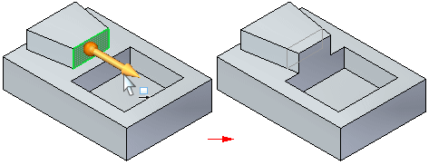

Modify Dimension command bar
When you click a dimension value, the Modify Dimension command bar is displayed.
-
Connected Faces
Specifies how the faces connected to the selection adapt during the modification.
-
Extend/Trim
Modifies the model by trimming and extending adjacent faces.
Adjacent faces (A) are extended or trimmed as required, but will maintain their original orientation. The size of the selected face can change.

-
Tip
Modifies the model by trimming, extending, or changing the current orientation of connected faces. In some situations, this can cause the current orientation of connected faces (A) to tip or change their angle with respect to the selected face. The size of the selected face does not change.

-
Lift
Lifts the select set and adds faces to the model. The selected face and adjacent faces do not change.

-
-
Precedence
Specifies whether the faces in the select set or the unselected faces have precedence during the modification. Faces that have priority are regenerated last during the synchronous operation and therefore, tend to be preserved in the resultant model.
The options which are available can change based on the active environment.
-
Select Set Priority
Specifies that the selected and moving faces have priority over nonmoving faces. Notice that the faces adjacent to the face being moved are extended, and the nonmoving faces are trimmed when this option is set.

-
Model Priority
Specifies that the nonmoving faces have priority over selected and moving faces. Notice that when this option is set, the face being moved can only be moved until it is coincident with the cutout, because the nonmoving faces have priority.

-
None
No face interactions will occur.
-